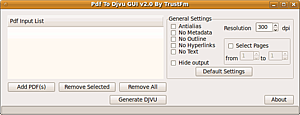

pdf2djvu
Dieser Artikel wurde für die folgenden Ubuntu-Versionen getestet:
Ubuntu 16.04 Xenial Xerus
Ubuntu 14.04 Trusty Tahr
Zum Verständnis dieses Artikels sind folgende Seiten hilfreich:
 pdf2djvu
pdf2djvu  ist ein mächtiges Kommandozeilenwerkzeug zum Konvertieren von PDF-Dateien in das DjVu-Format. Die Dateien können sowohl als "bundled"- als auch als "indirect"-Dokumente ausgegeben werden; es stehen eine Vielzahl von Optionen zur individuellen Anpassung zur Verfügung. Bestehende Grafiken, Textlayer, Inhaltsverzeichnisse ("Outlines"), Hyperlinks und Metadaten (auch XMP ) bleiben erhalten. Es können auch "gescannte" .pdf-Dateien ohne Textlayer verarbeitet werden, allerdings entstehen dann keine mehrlagigen DjVu-Dokumente.
ist ein mächtiges Kommandozeilenwerkzeug zum Konvertieren von PDF-Dateien in das DjVu-Format. Die Dateien können sowohl als "bundled"- als auch als "indirect"-Dokumente ausgegeben werden; es stehen eine Vielzahl von Optionen zur individuellen Anpassung zur Verfügung. Bestehende Grafiken, Textlayer, Inhaltsverzeichnisse ("Outlines"), Hyperlinks und Metadaten (auch XMP ) bleiben erhalten. Es können auch "gescannte" .pdf-Dateien ohne Textlayer verarbeitet werden, allerdings entstehen dann keine mehrlagigen DjVu-Dokumente.
Installation¶
Das folgende Paket muss installiert[1] werden:
pdf2djvu (universe)
 mit apturl
mit apturl
Paketliste zum Kopieren:
sudo apt-get install pdf2djvu
sudo aptitude install pdf2djvu
Manuelle Installation¶
Die Version in den Paketquellen ist in den offiziellen Quellen ggf. veraltet, ein aktuelle Version kann aus dem Quellcode  erstellt werden. Das Archiv herunterladen und entpacken[2]. Das Programm wird standardmäßig kompiliert und installiert[3], ggf. zuvor die Abhängigkeiten, z.B. im Terminal[4]:
erstellt werden. Das Archiv herunterladen und entpacken[2]. Das Programm wird standardmäßig kompiliert und installiert[3], ggf. zuvor die Abhängigkeiten, z.B. im Terminal[4]:
Befehl zum Installieren der Build-Abhängigkeiten:
sudo apt-get build-dep pdf2djvu
sudo aptitude build-depends pdf2djvu
auflösen.
Funktionsweise¶
pdf2djvu verwendet folgenden "naïven", aber sehr effektiven, Algorithmus, um die Lagen zu produzieren: Für jede Seite des Dokumentes wird zunächst eine vollständige Rastergrafik erstellt. Außerdem wird eine zweite Version gerastert, für die die Elemente Text, bitonal gerasterte Grafik ("lineart") und Vektor-Elemente (Ausnahme: Füllfarben großer Flächen, also Hintergrund etc.) ausgelassen werden. Die beiden Grafiken werden dann Pixel für Pixel abgeglichen. Wenn die Farben der entsprechenden Pixel übereinstimmen, wird der Pixel der Hintergrundebene zugerechnet, ansonsten wird er als Teil des Vordergrundes verwendet.
Standardmäßig werden alle in der PDF-Datei enthaltenen Daten, also das Inhaltsverzeichnis, Hyperlinks, vorhandene Textebene, bei der Konvertierung mit übernommen, als Metadaten werden die Angaben zum Titel, Autor, Thema, Erstellsoftware, Producer, Erstell- und Bearbeitungsdatum ausgelesen. Als Auflösung wird 300 dpi verwendet. Die Datei wird als (mehrseitiges) bundled-Dokument konvertiert.
Bedienung¶
Die allgemeine Syntax auf der Kommandozeile[4] lautet
pdf2djvu -o <Ausgabedatei>.djvu [OPTIONEN] <Eingabe>.pdf
Ohne weitere Angabe von Optionen wird aus der angegebenen <Eingabe>.pdf im selben Verzeichnis eine <Ausgabe>.djvu-Datei erstellt. Wenn indirekte Dokumente erstellt werden sollen, wird die Angabe des Verzeichnisses zum Ablegen der einzelnen Daten benötigt; dieses Verzeichnis muss bereits existieren, und der Benutzer muss Schreibrechte dafür besitzen. Syntax in dem Falle:
pdf2djvu {-i | --indirect} <index> [OPTIONEN...] <Eingabe>.pdf index steht für die Indexdatei, die im Ordner mit dem gleichen Namen angelegt wird; existiert der Ordner nicht, werden alle Dateien im derzeitigen Ordner erstellt. Über die Datei index.djvu wird die indirekte Datei dann aufgerufen. Zusätzlich entsteht die Datei shared_anno.iff, in der sich die "bitmap" mit allen verwendeten Zeichen befindet, auf die z.B. für die Suche zurückgegriffen wird.
Optionen¶
Einige der mögliche Optionen:
| Optionen für pdf2djvu | |
| Argument | Funktion |
| Extraktions-Optionen | |
--no-metadata | vorhandenen Metadaten werden nicht übernommen |
--verbatim-metadata | Metadaten werden komplett übernommen |
--no-outline | keine Übernahme des Inhaltsverzeichnisses |
--no-hyperlinks | keine Übernahme vorhandener Hyperlinks |
--no-text | keine Übernahme der Textebene |
--words | Text wird extrahiert, die Position jedes Wortes wird festgehalten (Standard) |
--lines | Text wird extrahiert, die Position jeder Zeile (statt der Wörter) wird festgehalten |
-p <Seiten>, --pages <Seiten> | Seiten/Bereiche, ggf. durch Kommata getrennt (z.B. 1-7, 9, 13-15) (Standard: Alle Seiten) |
| Bildqualität | |
--monochrome | die Seiten werden als monochrome Bilder ausgegeben |
--anti-alias | ermöglicht Antialiasing der Schrift und Vektorgrafiken; nicht empfohlen! |
-d, --dpi=<Auflösung> | erwünschte Auflösung in dpi, (mögliche Werte: zwischen 72 und 6000, Standard 300) |
--guess-dpi | die Ursprungsauflösung aus eingebetteten Bilddaten errechnen; mit Vorsicht zu verwenden! |
| Sonstiges | |
-j, --jobs=n | Anzahl der parallel ausgeführten Prozesse, Standard ist 1 |
-j=, --jobs=0 | automatische Anpassung der Anzahl der parallel ausgeführten Prozesse |
-q, --quite | unterdrückt alle Ausgaben im Terminal |
-v, --verbose | Ausgabe aller Details, z.B. zum Debugging |
-h, --help | Hilfe, listet die möglichen Optionen auf |
--version | gibt die Versionsnr. des Programms aus |
pdf2djvu liefert eine Vielzahl weiterer, z.T. sehr spezieller Optionen. Eine vollständige Übersicht liefert die Manpage des Programms.
Grafische Benutzeroberfläche¶
Das Programm "Pdf to Djvu GUI" liefert eine einfache GTK-Benutzeroberfläche für pdf2djvu, mit dem die Auswahl der zu konvertierenden Dateien, sowie einige der Optionen in einem Benutzerfenster ausgewählt werden können. Das Programm ist Freeware, die Linux-Version kann als
.zip-Archiv heruntergeladen werden.
Hinweis!
Fremdsoftware kann das System gefährden.
Das Archiv entpacken[2], es enthält die Programmdatei Pdf To Djvu GUI, die direkt gestartet werden kann[5], bei Bedarf kann auch ein Eintrag im Startmenü erstellt werden[6].
Hinweis:
Unter 64-Bit-Systemen startet die GUI nicht, sie ist für 32-bit-Systeme ausgelegt. Im Terminal erscheint ein Hinweis in der Art
PdfToDjVuGUI: error while loading shared libraries: libX11.so.6: cannot open shared object file: No such file or directory
obwohl diese Datei standardmäßig mit dem Paket libX11-6 installiert ist.

Bedienung¶
Die Bedienung ist recht einfach. Über "Add PDF(s)" werden die gewünschten PDF-Dateien ausgewählt, die im Fenster "Pdf Input List" mit Pfadangabe aufgeführt werden. "Remove Selected" entfernt die markierte, "Remove All" alle Dateien. Daneben lassen sich per Checkbox die Optionen --anti-alias, --no-metadata, --no-outline, --no-hyperlinks und --no-text auswählen, die Auflösung (--dpi) einstellen, und die zu bearbeitenden Seiten festlegen, allerdings werden die Werte für alle gewählten Dateien gleichermaßen verwendet. "Hide Output" sollte der Option -p/--quiet entsprechen. "Default Settings" stellt den Standard ohne Optionen wieder her. "Generate DJVU" startet den Konvertierungsprozess, die Dateien werden als <Eingabename>.djvu im selben Verzeichnis wie die .pdf-Dateien abgelegt. Nach Abschluss der Konvertierung erscheint ein Fenster mit einer Erfolgsmeldung.
Die unter "About -> Check Version" angepriesene Version 2.1 ist nur für Windows vorgesehen.
Batch-Konvertierung auf der Kommandozeile¶
Um zügig alle PDF-Dateien eines Ordners zu konvertieren, kann z.B. der Einzeiler
for i in *.pdf; do pdf2djvu -o "${i%%.pdf}.djvu" "$i"; done ausgeführt im jeweiligen Verzeichnis, verwendet werden (siehe Forum).
Alternativen¶
DjVuDigital, ein vergleichbares Programm des DjVuLibre-Projektes . Allerdings muss dazu zunächst ein spezieller Ghostscript-Treiber erstellt werden, aufgrund unklarer Lizenzbedingungen existiert kein "fertiges" Programm. Das Programm kann neben .pdf-Dateien auch die Formate PostScript(.ps), GZipped PostScript (.ps.gz) und Encapsulated PostScript (.eps) konvertieren; Metadaten lassen sich allerdings für PDF-Dateien nicht mit übertragen.
Mit gscan2pdf kann man PDF-Dateien importieren, und dann als PDF wieder ausgeben lassen; Textebenen müssten allerdings neu erstellt werden.
Den umgekehrten Prozess kann man mit djvu2pdf bewerkstelligen, Textlagen können erhalten werden.
- Erstellt mit Inyoka
-
 2004 – 2017 ubuntuusers.de • Einige Rechte vorbehalten
2004 – 2017 ubuntuusers.de • Einige Rechte vorbehalten
Lizenz • Kontakt • Datenschutz • Impressum • Serverstatus -
Serverhousing gespendet von